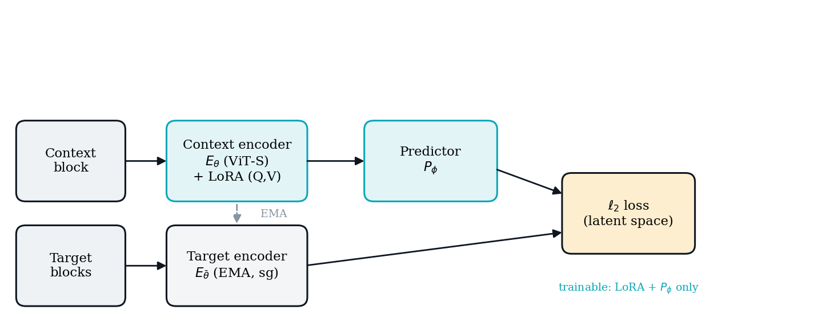

MICCAI 2026 · MSB EMERGE · Oral
Label- & Parameter-Efficient Lung Ultrasound Representation Learning via I-JEPA for Edge Diagnostics
Heramb Vivek Patil
0.960 AUROC
<1% params
34 FPS on a laptop
+0.057 @10% labels (p=0.016)
The problem
Point-of-care lung ultrasound is ideal — but ML on it is hard
Cheap, portable, radiation-free bedside imaging. Three obstacles reinforce each other:
1Labels are scarce — every label needs a clinician; public LUS sets are <2k frames.
2Images are full of shortcuts — manufacturer UI (logos, rulers, text) + speckle noise. A naïve model learns the source, not the pathology.
3On-device adaptation must be cheap — a hospital can't fully fine-tune a 22M-param backbone or ship data to the cloud.
The idea
Freeze the backbone; teach it by predicting features, not pixels
Start from an ImageNet ViT-Small. Freeze it. Add tiny LoRA adapters (<1% of weights). Train them with I-JEPA self-supervision — no labels.
Then discard the SSL scaffolding, freeze the encoder, and train a one-layer classifier.
✗ Pixel reconstruction (MAE) must reproduce speckle — random noise → wasted capacity.
✓ Latent prediction (I-JEPA) predicts abstract structure → ignores speckle, learns pleural lines / consolidations.
Method
Parameter-efficient I-JEPA

Context encoder (LoRA) + EMA stop-gradient target encoder + shallow predictor. Only LoRA + predictor train; predictor is discarded.
Setup & protocol
POCOVID-Net, evaluated the rigorous way
- 1,932 frames, 3 classes (healthy / bacterial pneumonia / COVID-19), ≈161 videos
- 7-fold video-level split — all frames of a video stay on one side
- Leakage-free: headline results re-run SSL per fold with test videos excluded
A naïve frame-level split leaks near-duplicate frames → inflates AUROC to a spurious 0.993. We don't do that.
Main result
Strong, and honestly reported
0.960 ±.015
macro AUROC · 7-fold leakage-free
acc 0.851 · sens 0.842 · spec 0.917
| Class | Sens. | Spec. |
|---|
| COVID-19 | 0.750 | 0.945 |
| Bacterial | 0.885 | 0.943 |
| Healthy | 0.890 | 0.863 |
COVID recall (0.750) is the weak spot — flagged, not hidden.
Baselines — the honest twist
At full labels, everything ties
| Method | AUROC | Acc | Trainable |
|---|
| MAE + LoRA (pixel SSL) | 0.949 | 0.827 | 0.147M |
| I-JEPA + LoRA (ours) | 0.960 | 0.851 | 0.147M |
| Supervised LoRA (no SSL) | 0.965 | 0.876 | 0.147M |
| Full fine-tuning | 0.970 | 0.900 | 21.8M |
All four are statistically tied (Wilcoxon p>0.29). So what does self-supervision actually buy? → next slide.
The payoff ★
Self-supervision wins when labels are scarce
+0.057 AUROC @ 10% labels
+0.050 AUROC @ 25% labels
Wins 7/7 folds at each · paired Wilcoxon p = 0.016
Matches full fine-tuning with ~15–25% of the labels. Ties at 50–100%.
Why it works
Latent beats pixel · capacity isn't the bottleneck
Latent > pixel SSL
I-JEPA 0.960 vs MAE 0.949 at identical budget → predicting features (not speckle) pays off.
Wins even with no trained head: k-NN 0.958 vs 0.937.
LoRA rank ablation
| Rank | Params | AUROC |
|---|
| 2 | 0.037M | 0.965 |
| 8 | 0.147M | 0.962 |
| 32 | 0.590M | 0.968 |
Flat across 16× — rank 2 (37K params) = rank 32.
Edge readiness
Real-time on a laptop
34 FPS
29.5 ms/frame · Apple M4
0.037M
smallest adapter (0.17%)
0.15 MB
on-device adapter (rank 2)
Full ViT-S runs at inference; LoRA cuts adaptation & storage, not inference. A hospital could update the model on-device.
Honest limitations
What we don't claim
- No test-time corruption robustness — under synthetic corruption I-JEPA drops more than baseline (−0.168 vs −0.135). Reported, not hidden.
- Cross-source gap — leave-one-source-out AUROC falls 0.96 → 0.75 (source/class confounded in POCOVID).
- Single dataset; modest COVID-19 recall (0.75).
External, multi-centre validation is the primary future work.
Takeaway
Parameter-efficient self-supervision makes edge lung ultrasound work when labels are scarce
- <1% trainable params · real-time on a laptop
- +0.057 AUROC @10% labels, 7/7 folds, p=0.016
- Latent SSL > pixel SSL for speckle-heavy ultrasound
- Rigorous, leakage-free, honestly-scoped
Code: github.com/heramb-patil/researchmicc · Accepted (Oral), MSB EMERGE 2026 · Thank you